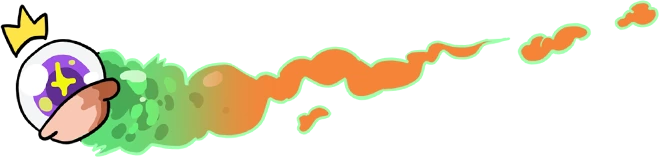
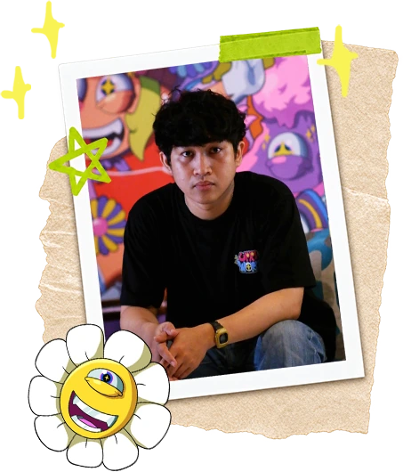
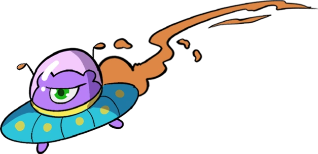
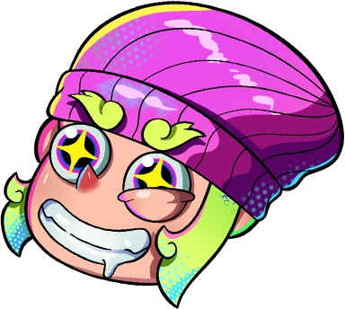

UPRIJON
Uprijon, also known as Aria Afrizon, Uprijon has had a passion for drawing and observing visual forms. He grew up watching cartoons and animated TV series, which naturally shaped his skills in creating expressive, cartoon-style artwork.
His interests later expanded into urban culture, including hip-hop, graffiti, and designer toys. This fusion of fine art, design, and street culture gives Uprijon's work a fresh, pop, and modern feel.
Uprijon often tells stories of everyday life through his artwork light and relatable moments, or social phenomena he observes in his surroundings. He channels his restlessness into playful and visually pleasing pieces, inviting people to see things from a different perspective.
Playful color palettes are one of his trademarks. His love for colors stems from his desire to build his own imagined world a joyful and vibrant space that offers an escape from the noise of everyday life, and a safe place for anyone seeking comfort and freedom.


“Art is a tool to become a calmer, happier person and a way to momentarily escape a reality often driven by greed and the ambition to be invincible in the face of hollow pleasures. Telling stories and capturing beauty through visuals may be the role of an artist, and that is a capacity I take pride in. To me, the ability to share beautiful things is a privilege.”
Exhibition
- Mural Exhibition at the National Gallery in Jakarta
- Exhibition in Jakarta with 2Madison and Erlangga Talent Week
- Urban Storming art exhibition in Jakarta with Faculty of Design lecturers
- How Are You art exhibition at 2Madison Gallery
- Art Moments exhibition in Jakarta with Art1 Gallery
- Art Sub exhibition in Surabaya with Artstation
- Art Sub exhibition in Surabaya with Artstation
- Art Moments exhibition in Jakarta with Art1 Gallery
- Inc Art Bodensee exhibition in Austria with Kotak Art Collective and Tropical Art House